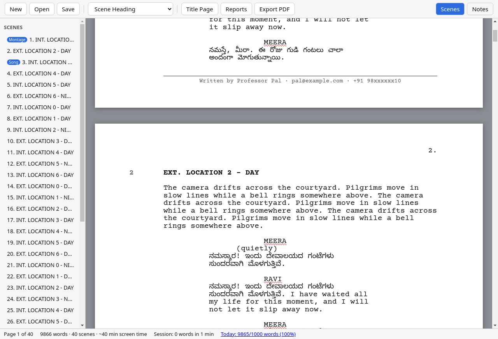
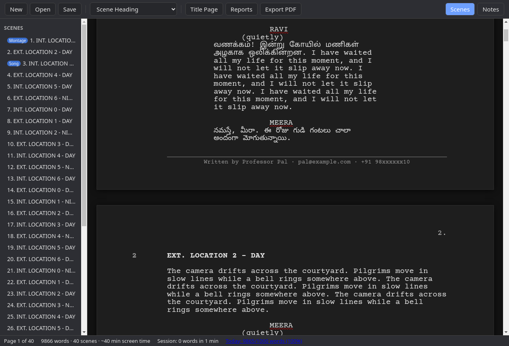

Kathanam (కథనం) means “screenplay” in Telugu.
Write your feature in true Hollywood format — in English, Telugu, Tamil, Hindi and more.
Free forever. No fee, no sign-up, no registration.
☕ Buy me a coffeeFree · Version 1.1.0 · Windows 10/11 64-bit (portable zip) · macOS Apple Silicon (Intel Mac version) · Linux 64-bit (.deb for Ubuntu/Debian)

Real pages with 1.5" left and 1" margins, page numbers, and page breaks that match the PDF.
Enter, Tab and Alt-key element switching work just like Trelby.
Write dialogue in Telugu, Tamil, Kannada, Hindi and other scripts alongside English.
Generate a title page, show your name and contact in a footer, and edit scene numbers by hand.
Tag scenes as Montage, Song, Action, Flashback, Dream, Intercut or your own type.
Breakdowns by location, character and scene type.
PDF, Final Draft (.fdx), Fountain, Word (.docx), Trelby and plain text.
Autosave, crash recovery and rolling backups you can restore from the File menu.
Dark pages for late-night writing; PDFs and prints stay on white paper.

Kathanam-Setup.exe.chmod +x Kathanam-x86_64.AppImage and ./Kathanam-x86_64.AppImage.sudo apt install ./Kathanam-amd64.deb.| Keys | Action |
|---|---|
| Enter / Tab | Next element (Trelby rules); Tab on an empty line changes its type |
| Alt+S | Scene heading |
| Alt+A | Action |
| Alt+C | Character |
| Alt+D | Dialogue |
| Alt+P | Parenthetical |
| Alt+T | Transition |
| Alt+H | Shot |
| Alt+B | Act break |
| Alt+N | Add note |
| Alt+G / Ctrl+G | Go to scene / page |
| F8 | Spell check |
| Ctrl+N / O / S | New / Open / Save |
| Ctrl+P | Export PDF |
| Ctrl+W / Ctrl+Q | Close script / Quit |
Kathanam is free forever and always will be. If it helps your writing and you want to say thanks, you can buy me a coffee. It's completely voluntary, and every feature works without it.
☕ Buy me a coffeeYes, completely free forever. No fee, no registration, no sign-up. Donations are optional.
Kathanam isn't code-signed yet. On Windows, choose More info → Run anyway. On a Mac, right-click the app and choose Open the first time.
Yes. From version 1.1.0 it is called Kathanam. Installing it updates ScreenWriter Pro in place, and all your scripts, settings and backups are kept.
If you used the app before it was renamed, backups stay in Documents\ScreenWriter Pro Backups; new installs use Documents\Kathanam Backups. Use File → Restore From Backup.
You can export to both formats, plus Word, Trelby, PDF and text.
Try starting it with the --safe flag, which turns off graphics acceleration.
Windows only for now.